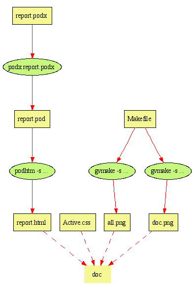
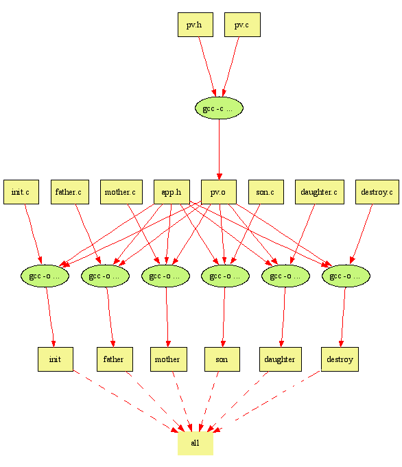

| report - OS Design Report |
report - OS Design Report
章亦春 <agentz@tom.com>
3030602110 计算机0304班
计算机科学与通信工程学院 江苏大学
Maintainer: Agent Zhang <agentz@tom.com> Date: 1 Jan 2006 Last Modified: 1 Jan 2006 Version: 0.01
本文档是作为我的操作系统课程设计的报告编制的。在这个报告中，我 不愿将网上到处都能找到的技术材料和用户文档塞在这里，或许这会让 我的导师不高兴，但我希望自己写下的尽可能的是我自己的东西。正如 我在 QQ 上批评我一个同学的报告 ``full of dregs'' 一样，我也会 抨击自己的文章，如果它也充满了抄袭的话。
在这里我不愿意把注意力放在某一种特定的 UNIX 家族变种上。事实上， 我们在课程设计期间使用的是 Solaris 8, 而在宿舍的机器上安装的是 Redhat Linux 9. 从可移植性的角度出发，我也更倾向于使用符合 POSIX 标准的通用特性。
我以为我们不应当将 UNIX 当作是一个包含了众多功能和特性的软件来 看待。软件是死物，并没有生命。但是以 UNIX 为依托的文化却是最为 宝贵的。
UNIX 文化在我这个具有浓厚的 Windows 背景的程序员看来，是经常 与“神奇”和“魔术”这一类词联系在一起的。UNIX 上的人们所做的事情 乍一看，似乎落后而原始。因为他们最喜欢的是命令行和文本，而不是 图形界面和鼠标。他们习惯去做其他平台的人看上去很可笑的事情，那 就是围着单调乏味的命令团团转。呵呵
起初，我也是这么看待 UNIX 文化的。然后，自从我学习了 Perl，这种 出生成 UNIX 世界的语言之后，我开始被命令行和文本的力量所震撼。 我万万没有想到看上去如此呆板的命令行界面在 UNIX 程序员们的手中 居然充满了魔力。我只需输入几条甚至一条命令就能完成很复杂的任务， 或者以“并联”和“串联”方式将几条命令拼接在一起。这其中的许多任务 是在 GUI 方式下很难自动化的。
下面是一个“串联”的例子：
get-data.pl | preprocess.tcl | process.py | postprocess.sh > output
这儿是一个“并联”的例子：
./init
./father > f.out &
./mother > m.out &
./daughter > d.out &
./son > s.out &
从 ActivePerl 在企业界的流行，我们不难看出 Perl 携带的 UNIX 文化 对 Windows 文化的重要影响。虽然，这两种文化是如此不同，但是事实证明， 它们是可以在许多方面融合起来的。
比如，这篇文档就是用 Perl 的 POD 格式描述，再由一个叫做 podhtm 的 Perl 脚本生成的。相信我们班还有好几个同学会选择 POD 来制作他们的课 程设计报告。As witnessed on QQ:
章亦春 (2006-01-01 14:49:34)
I've seen sal's OS design report.
章亦春 (2006-01-01 14:49:47)
it's full of dregs. sigh.
章亦春 (2006-01-01 14:52:03)
but anyway, i do like the POD appearance of his report.
it looks pretty cute.
万��新 (2006-01-01 14:54:55)
我现在正在用pod来做我的
os design
章亦春 (2006-01-01 14:55:20)
great! it seems to me that pod is quickly gaining ground
in our department. hooray!
这一篇文档生成的流程图如下所示：

值得一提的是上面这张图也是我的一个叫做 gvmake 的 Perl 脚本自动根据该 项目的 Makefile 文件自动生成的。其实上面这张图就叫 doc.png，你可以 在图中看到它自己是如何生成的！Hooray for bootstrapping!
UNIX 文化是务实的文化，它不喜欢华而不实，或者矫揉造作。UNIX 文化是创 造的文化，这里的人们都热衷于让机器来分担自己的工作，并且号称是因为自 己“懒惰”。UNIX 文化又是魔法的文化，这儿的人们习惯于开发写程序的程序， 并且梦想着有一天计算机能为它们写所有的程序，而这些技术在许多其他 OS 上 的人们看来，简直就是魔术。
我只能在这里简单地列举一下自己对 UNIX 文化的感悟，我不会尝试在这篇 报告中去深入探究 UNIX 文化的真谛，因为这大大超出了我的能力范围。
在 UNIX 大家族中，我只安装过 Redhat Linux 9，而且还是几年前的事情了。 我只记得当初如何为 Linux 分配硬盘分区花费了我不少的功夫。好在最后终于 搞清楚了 /hda 这样的符号的含义，这才安装成功。让 Linux 与 Windows “共 享”一台机器是比较有趣的，而且常常了也是很有必要的。毕竟不是所有的硬件和软 件都对 Linux 提供支持。（顺便提一下，在自由软件领域，则刚好相反，几乎 所有项目都支持 Linux，但对 Windows 的支持往往很差。）
这几日，我几年前购买的正版的 Linux 安装盘在本系的同学当中“辗转”。现在 的情况是，大家都会装 Linux，就是我还不怎么清楚。
我对 UNIX 基本操作很熟悉，虽然我只在课程设计期间登录过学校的 Solaris 小 型机系统。奥秘就在于我的 Windows 系统上总会安装 Cygwin，它利用 Windows API 摸拟了大部分的 UNIX POSIX API，从而使得许多 UNIX C/C++ 程序 不加修改或者只需少许修改就可以移植到 Win32 平台上。它的思想让我想起了 JVM，呵呵。现在我在每天的工作中既可以使用 Win32 命令，如 tree, dir, cl, notepad 之类，又可以使用 UNIX 命令，如 ls, time, grep, diff, gcc. 这种 组合的确是令人振奋！
我发现当系统中安装有多个版本的同一软件时， UNIX 世界的 which 命令非常有用， 它可以告诉我 OS 在 PATH 环境变量中究竟首先找到的是哪个版本。下面是一个 Cygwin 中的一个例子：
D:\Agent2002>which perl
/cygdrive/e/perl/bin/perl
前不久我和万��新一起尝试了 Apache 服务器在 Windows XP 上的安装与配置， 我们成功地让 apache 启动了我用 Perl 的 Catalyst 框架开发的 Web 应用 程序。它真的很不错，只不过刚开始的时候搞清楚如何修改它的配置文件花了我们 不少的工夫。
毫无疑问，CGI 是我们 Perl 程序员的骄傲。不幸的是，Windows NT 的 IIS 服务器在运行 CGI 脚本方面有着诸多限制，因此作为开源软件的 Apache 无论 是在可移植性上，还是在灵活性上都是更理想的选择。
老师让我们利用 UNIX IPC 系统调用进行 PV 操作的编程。题目是这样的：现 有四个进程，分别名为 father, mother, daughter, 和 son. 它们共享 OS 中的一块存储区域，名为 plate. 现在 father 不停地往 plate 中放 苹果，mother 不停地往 plate 中放桔子，daughter 呢，则不停地从 plate 中取苹果，son 则不停地从 plate 中取桔子。四个进程并发运行，要 求 plate 中最多只能放 5 个水果。
事实上，在和万��新商量好基本算法之后，我就立刻用 Perl 的 ithread 多 线程模型对算法本身进行了验证。同一个问题的 Perl 多线程实现比 C 要简洁 清晰得多：
bigplate.pl
# bigplate.pl
use strict;
use warnings;
use threads;
use threads::shared;
use PV;
use constant {
TIMES => 15,
PLATE_SZ => 10,
};
$| = 1;
my @plate : shared := ();
# apple stack pointer (stack grows downwards)
my $apple_sp : shared := 0;
# orange stack pointer (stack grows upwards)
my $orange_sp : shared := PLATE_SZ - 1;
semas(
can_put => PLATE_SZ,
can_get_apple => 0,
can_get_orange => 0,
apple_sp => 1,
orange_sp => 1,
);
$PV::sleep = 0.03;
async { #-# father
for (1..TIMES) {
P('can_put');
P('apple_sp');
print "Father is putting an apple...\n";
$plate[$apple_sp] = 'apple';
$apple_sp++;
V('apple_sp');
V('can_get_apple');
}
#-#
}
async { #-# mother
for (1..TIMES) {
P('can_put');
P('orange_sp');
print "Mother is putting an orange...\n";
$plate[$orange_sp] = 'orange';
$orange_sp--;
V('orange_sp');
V('can_get_orange');
}
#-#
}
async { #-# son
for (1..TIMES) {
P('can_get_orange');
P('orange_sp');
my $fruit = $plate[++$orange_sp];
print " Son got an $fruit!\n";
V('orange_sp');
V('can_put');
}
#-#
}
async { #-# daughter
for (1..TIMES) {
P('can_get_apple');
P('apple_sp');
my $fruit = $plate[--$apple_sp];
print " Daughter got an $fruit!\n";
V('apple_sp');
V('can_put');
}
#-#
}
my $thr;
foreach $thr (threads->list) {
if ($thr->tid && !threads::equal($thr, threads->self)) {
$thr->join;
}
}
这个脚本使用了我编写的 PV.pm 模块。该模块利用标准的 Thread::Semaphore 模块来实现多线程条件下的 PV 操作。另外它还提供了创建信号量的简单接口。其 源码如下所示：
PV.pm
package PV;
use strict;
use warnings;
use Carp qw(croak);
use base 'Exporter';
use Thread::Semaphore;
use Time::HiRes 'sleep';
our @EXPORT = qw(
semas P V
);
our $sleep = 0;
our %semas;
sub semas {
my %names = @_;
foreach (keys %names) {
#warn "$_ => $names{$_}\n";
$semas{$_} = Thread::Semaphore->new($names{$_});
}
}
sub P {
#sleep(1);
my $name = shift;
my $sema = $semas{$name} or
croak "Can't find semaphore $name";
$sema->down;
threads->yield;
sleep(rand $sleep) if $sleep;
}
sub V {
#sleep(1);
my $name = shift;
my $sema = $semas{$name} or
croak "Can't find semaphore $name";
$sema->up;
threads->yield;
sleep(rand $sleep) if $sleep;
}
1;
该应用用到了 UNIX 的 shared memory 和 semaphore 机构，因此无法在 Cygwin 中工作（但可以成功编译），而我的机器上只安装了两个 Windows 2000 操作系统，因此我只好每次登录到学校的 Solaris 小型机上进行程序调试。 事实证明，Windows 上的 ftp 与 telnet 的组合工作得非常好，每次我在 Windows 本地的 EditPlus 源代码编辑器上编辑好代码之后，就在 ftp 提 示符下用 mput 或者 put 命令上传之，最好再在 telnet 提示符下向远方机 器发送编译、运行等等命令。
在那个 Solaris 上构造项目的过程还是比较痛苦的，因为它连 make 工具都 没有提供，因此我只好使用 Perl 脚本来使项目构造和测试过程自动化。更要命 的是它上面的 Perl 版本是如此之老，居然还是 5.005_4，这可是 Perl 5 的第一个正式的版本哦。我在五年前学 Perl 的时候，版本号就已达到 5.6.1 了，所以这是我平生第一次见到如此古老的 Perl 安装。
我的这些 C 和 Perl 代码都已处在 SVN/SVK 的版本控制之下。你总是可以在 任何时间，从我在德国的 SVN 服务器得到该项目的最新版本：
http://svn.berlios.de./svnroot/repos/unisimu/OS/PV/UNIX/
你可以在 IE 中浏览这个 repository, 但更优雅的方式是通过 SVN 客户端自 动地下载所有目录和文件。如果你使用 Windows， TortoiseSVN 是非常不错的选择， 它不仅提供了集成到“我的电脑”中的图形界面，而且它是免费软件。你可以从它的 官方主页得到：
http://tortoisesvn.tigris.org/
使用 SVN 客户端进行下载的时候，需要使用下面的 URL 进行 checkout：
https://svn.berlios.de./svnroot/repos/unisimu/OS/PV/UNIX
下面引用项目自述文件 (README) 来说明如何生成和运行此项目：
README
This is a UNIX C implemenation for bigplate.pl in the parent directory.
To build this application, you need to enter the following commands under a UNIX shell:
chmod +x clean build run
./build
./clean
To get the application running, you can simply enter the command
./run
and then you can check the four processes output later:
cat f.out
cat m.out
cat s.out
cat d.out
It's a good habit to clean up the shared resources when you has your job done. Simply
put the following commands to do the cleaning:
./destroy
When you modify the keys for semaphores or shared memories, you have to update the
keys in clean.cfg accordingly, so it's not as convenient as using ``destroy''.
Because destroy.c also includes the global C/C++ header ``app.h''.
When you obtain the following error message from the ``init'' program:
create_sema: : No space left on device
create_sema: : No space left on device
init.c: line 30: Failed to create semaphore 'can_put'.
then you should release the shared resources created by other users if you can.
Run the ``clean'' script to release all the shared memory segments and semaphores
owned by the current user:
./clean
#ifndef _PV_H_
#define _PV_H_
/* 下面返回类型为 int 的函数都以返回 1 表示操作成功，
返回 0 表示操作失败 */
/* P 操作，key 是信号量的键值 */
int P(int key);
/* V 操作，key 是信号量的键值 */
int V(int key);
/* 创建共享内存，key 是该内存对应的键值,
len 是该内存的大小（以字节为单位）*/
int create_shared_mem(int key, int len);
/* 以指定的键值 key 创建信号量，并赋初值为 val */
int create_sema(int key, int val);
/* 获取键值 key 对应的共享内存的首地址,
len 必须与实际大小完全一致 */
void* get_shared_mem(int key, int len);
/* 当完成对 get_shard_mem 返回的共享指针
的操作以后，退回该指针给 OS */
int commit_shared_ptr(void* shm_addr);
int free_shared_mem(int key, int len);
int free_sema(int key);
#endif
pv.h 的实现文件。但凡使用了 pv.h 的 C/C++ 文件都应与
此文件一起编译链接。由于该文件篇幅较长，我把它放到了APPENDIX 中。
/******************************************
app.h
Copyright (c) 2005 Agent Zhang
2005-12-29 2005-12-30
******************************************/
#ifndef _APP_H_
#define _APP_H_
#include "pv.h"
#include <stdio.h>
#include <stdlib.h>
#include <stdarg.h>
enum {
DEBUG = 0,
/* user constants */
PLATE_SZ = 4,
TIMES = 20,
BUFSIZE = 10,
SEED = 123456,
/* shared memeory keys */
SHM_PLATE = SEED,
SHM_APPLE_SP = SEED + 1,
SHM_ORANGE_SP = SEED + 2,
/* synchronous semaphore keys */
SEM_CAN_PUT = SEED + 3,
SEM_CAN_GET_APPLE = SEED + 4,
SEM_CAN_GET_ORANGE = SEED + 5,
/* exclusive semaphore keys */
SEM_APPLE_SP = SEED + 6,
SEM_ORANGE_SP = SEED + 7,
/* shared memory sizes */
SHM_PLATE_SZ = PLATE_SZ * BUFSIZE,
SHM_APPLE_SP_SZ = sizeof(int),
SHM_ORANGE_SP_SZ = sizeof(int),
};
/* err: print error message and exit */
#define err(msg) { \
fprintf(stderr, "%s: line %d: " \
msg \
"\n", __FILE__, __LINE__); \
exit(2); \
}
#define HERE \
if (DEBUG) \
fprintf(stderr, "%s: line %d : GOT HERE!\n", __FILE__, __LINE__);
#endif
#!/usr/bin/perl -w
use strict;
my $CC = shift || 'g++';
`g++ -o 01test 01test.cpp pv.c`;
`$CC -c pv.c`;
`$CC -o init init.c pv.o`;
`$CC -o destroy destroy.c pv.o`;
`$CC -o father father.c pv.o`;
`$CC -o mother mother.c pv.o`;
`$CC -o son son.c pv.o`;
`$CC -o daughter daughter.c pv.o`;
注意，用户可以向 build 脚本提供一个命令行参数以指定使用的 C/C++ 编译 器。默认使用的是 g++. 事实上，我的这些代码既是合法的 C 代码，又是严格的 C++ 代码，因此使用严格的 C++ 编译器可以在编译期间发现更多的潜在的错误。 当然，你也可以改用 gcc 编译器，方法是：
./build gcc
用户可以通过命令行参数指定删除操作应用的帐户，比如
./clean n0304
就把 n0304 用户的共享资源全部删除。如果不提供任何参数，比如
./clean
则 clean 脚本通过 Perl 内建函数 getlogin 获取当前登录用户的用户名。 由于不清楚 ipcs 的输出格式是否在 UNIX 各个变种当中统一，因此 clean 在 Linux, FreeBSD 等系统上的可移植性就不清楚了。
由于 clean 的代码是如此之少，所以我决定把它放在下面：
#!/usr/bin/perl
use strict;
my $owner = shift || getlogin;
warn "The current owner is $owner.\n";
open(IN, "ipcs|") or
die "Can't open ipcs: $!";
while (<IN>) {
#warn $_;
if (/^m\s+(\d+)\s+0x(\w+).*\b$owner\b/) {
my ($shmid, $hexkey) = ($1, $2);
print "Removing shared memory 0x$hexkey ($shmid)...\n";
system("ipcrm -m $shmid");
next;
} elsif (/^s\s+(\d+)\s+0x(\w+).*\b$owner\b/) {
my ($semid, $hexkey) = ($1, $2);
print "Removing semaphore 0x$hexkey ($semid)...\n";
system("ipcrm -s $semid");
}
}
close IN;
为了便于测试，我还用 perl 写了一个“驱动引擎”，名为 run. 它可以异步 地依次调用 father, mother, daughter, 和 son 这四个进程。
下面是它的源代码：
#!/usr/bin/perl
use strict;
`./init`;
`./father > f.out &`;
`./mother > m.out &`;
`./daughter > d.out &`;
`./son > s.out &`;
下图是我的 gvmake 工具根据项目的 Makefile 绘制的，它清晰地描述了项目 核心 C/C++ 代码文件的编译过程，以及它们之间的关系：

上图所依据的 Makefile 文件内容如下：
RM_F = perl -MExtUtils::Command -e rm_f
CC = gcc
EXES = init father mother son daughter destroy
all: $(EXES)
init: init.c app.h pv.o
$(CC) -o $@ init.c pv.o
father: father.c app.h pv.o
$(CC) -o $@ father.c pv.o
mother: mother.c app.h pv.o
$(CC) -o $@ mother.c pv.o
son: son.c app.h pv.o
$(CC) -o $@ son.c pv.o
daughter: daughter.c app.h pv.o
$(CC) -o $@ daughter.c pv.o
pv.o: pv.h pv.c
$(CC) -c pv.c
destroy: destroy.c app.h pv.o
$(CC) -o $@ destroy.c pv.o
clean::
$(RM_F) $(EXES) pv.o *.out report.pod *.exe *.tmp
doc: report.html Active.css all.png doc.png
report.html: report.pod
podhtm -s Active.css -o $@ report.pod
report.pod: report.podx
podx report.podx
all.png: Makefile
gvmake -s 6x7
doc.png: Makefile
gvmake -s 4x6 doc
事实上，上面的图片只绘制了 Makefile 文件中以 all 为根的生成树。根
目标 clean 没有绘制, 而 doc 目标就对应于 UNIX 文化 一节中给出
的图片。
我在调试的 UNIX C 程序的过程中经常遇到下面的错误信息：
段错误--核心陷阱
初次遇到这个问题的时候，我显得手足无措，并且以为这是特定于 UNIX 共享操作的错误
信息。果真如此的话，我也就没有什么东西可以依靠了。但是后来我发现，它其实非常普遍，
即便是非 IPC 的 C 应用也会触发此错误。事实上，对内存的非法访问，就会触发该错误。
我想它应该非常类似于 Windows 环境下的“该程序执行了非法操作，即将关闭……”
或者 Windows 里常见的 “XXX 指令引用内存无效的，该内存不能为 read/written”。我
，现在已经习已为常，并且知道该如何排错了。
我使用 app.h 头文件中定义的 HERE 宏来辅助程序崩溃位置的确定。如果程序执行到 HERE 宏展开的位置，就会向 stderr 打 印出该位置上的文件名和行号。HERE 宏的一组典型输出如下所示：
father.c: line 51 : GOT HERE!
father.c: line 56 : GOT HERE!
father.c: line 61 : GOT HERE!
father.c: line 65 : GOT HERE!
father.c: line 28 : GOT HERE!
上面的输出其实是 father.c 文件第 51，56，61，65，和 28 行上的 HERE 宏所产生 的 stderr 调试输出。当然，如果我们不希望 HERE 宏继续喋喋不休的话，只需将 app.h 头文件中的 DEBUG 常数的取值改为 0 就可以了。
说实话，C 版本的实现比我想象得还要容易，但是有几个阴险的错误，还是花费了我几个小时的调 试与排错时间。都是内存未初始化或者内存指针非常存取之类的讨厌问题。万��新告诉我，不少 同学，一提到指针，他们就犯糊涂，看来我们大家对这种类型的错误信息应该还是很熟悉的。徐飞 进一步证实了我的推测：“对，别的同学也有这个问题”。
资源泄漏Solaris 小型机在分配的共享资源的数量上是有限制的，而在本周的课程设计期间，又 有如此之多的同学登录 Solaris 小型机运行自己的 IPC 程序。由于老师没有提供任 何清理程序，于是小型机经常出现无资源可分配的情形。所以当我在运行 init 的时候， 就会得到下面的出错信息：
$ ./init
create_sema: : No space left on device
create_sema: : No space left on device
init.c: line 30: Failed to create semaphore 'can_put'.
于是我先后以 n0305, n0302 和 n0304 的身份登录，然后运行我的 clean 脚本对这些 用户持有的所有共享内存和共享信号量进行清空。现在我的程序又可以正常工作了。
运行 clean 脚本释放某个登录用户名所拥有的所有共享资源可能是不礼貌的行为。因为 有可能有多个用户以同一登录名来使用计算机。因此我删除的资源很可能恰好是其他某个同学 创建并正在使用的。比如万��新就曾报怨说，我在他给老师作演示的时候他的所有共享资源 都被我的 clean 删除了，导致他的程序“当众出错”。
于是我认为最好的解决方案是，每个用户自己提供一个“收尾”程序，专门负责在最后清 除自己的初始化进程创建的那些资源。我的 BigPlate 项目中的这个“收尾”程序 名为 destroy，其源文件是 destroy.c
destroy.c 文件使用了 pv.h 中新增的两个函数 free_shared_mem 和
free_sema，它们的含义是一目了然的，对应的实现代码自然放在了 pv.c 文件中。
destroy 程序是由用户手工启动的（或由类似 run 这样的驱动脚本启动），启动的时机是 在我们完成有关 father, mother, daughter, 和 son 的操作和试验之后。
每一个好孩子在玩耍之后，都应该清理好游戏场地。 这也应该算是“游戏规则”的一部分。 在使用完申请过的系统资源之后不及时释放，就会发生系统资源泄漏。
事实上，我已经用 perl 写了一个通用的 clean 程序，它可以删除你指定的用户所持有的 指定的资源。但更优雅的解决方案是，我们自己再为每一个 IPC 应用编写一个 C 程序， 作为收尾，把 init 进程创建的共享资源全部删除。这么做的好处在于，每一次我们决定 修改共享内存或信号量的键值的时候，就只需要修改一处定义，那就是 app.h 中的常量定义。 否则，我们还必须在每次修改了 app.h 之后，再去修改 clean.cfg 文件中的内容， 这无疑将增加手工的工作量，提高了出现不一致的可能性，违反了所谓的 DRY 原则 (Don’t Repeat Yourself!).
destroy 程序正好与 init 程序对应起来，前者在最后释放资源，后者在最初申请资源。 它们的关系让我想起了 C++ 里的 delete 和 new 运算符。 C++ 程序员们总是用 new 运算符动态地创建对象，使用完毕之后，再 delete 销毁对象。这是好的编程习惯。
事实上，在 IPC 多进程的场合，不及时释放掉共享资源，比在 C++ 中忘记调用 delete， 后果要严重得多。因为 C++ 进程在堆中申请的内存资源总是会在进程终止时强制地退还给 OS， 但是 OS 级别上的共享内存和信号量则完全不同，即便申请它们的进程早已退出，如若我们不 显式地释放，它们将会一直留存在 OS 中，直到用尽所有的 OS 资源。而对于这一点，我们 从前似乎并未给予足够的重视。
利用 Perl 的 Win32::Mutex, Win32::Semaphore 模块将前面的 UNIX C 实现完整地移植 到 Windows 平台是完全可能的。由于 Microsfot 未提供简单的进程间共享内存的接口（Win32 的内存映射表是同种性质的东西，但是接口复杂），我以为将磁盘文件与信号量结合起来可以很 好地模拟出共享内存。万��新似乎对这个想法很感兴趣，可惜我现在没有足够的时机来完成它。
现在我能想到一个问题是，Perl 的 Win32::Semaphore 未提供删除信号量的接口，这意味着我 们只能创建，不能删除。于是无论从系统资源的利用率的角度，还是从应用重新初始化的角度，对 我们来说都是比较困难的。
#include "pv.h"
#include <stdlib.h>
#include <stdio.h>
#include <sys/types.h>
#include <sys/ipc.h>
#include <sys/shm.h>
#include <sys/sem.h>
#include <errno.h>
#include <string.h>
#ifndef TRUE
#define TRUE 1
#endif
#ifndef FALSE
#define FALSE 0
#endif
/* the mystic number 0777 stands for (S_IRWXU | S_IRWXG | S_IRWXO)
see UNIX reference for details.
*/
int P(int key) {
int semid;
struct sembuf p_buf;
semid = semget(key, 1, 0777);
if (semid == -1) {
perror("P: semget: ");
return FALSE;
}
p_buf.sem_num = 0;
p_buf.sem_op = -1;
p_buf.sem_flg = 0;
if (semop(semid, &p_buf, 1) == -1) {
perror("P: semop: ");
return FALSE;
}
return TRUE;
}
int V(int key) {
int semid;
struct sembuf v_buf;
semid = semget(key, 1, 0777);
if (semid == -1) {
perror("V: semget: ");
return FALSE;
}
v_buf.sem_num = 0;
v_buf.sem_op = 1;
v_buf.sem_flg = 0;
if (semop(semid, &v_buf, 1) == -1) {
perror("V: semop: ");
return FALSE;
}
return TRUE;
}
static void set_sembuf_struct(struct sembuf *sem,int semnum, int semop,int semflg) {
sem->sem_num=semnum;
sem->sem_op=semop;
sem->sem_flg=semflg;
}
int create_shared_mem(int key, int len) {
int shmid;
char *addr;
struct shmid_ds shm_desc;
shmid = shmget(key, len, 0777|IPC_CREAT|IPC_EXCL);
if (shmid == -1) {
if (errno == EEXIST) {
shmid = shmget(key, len, 0777);
if (shmctl(shmid, IPC_RMID, &shm_desc) >= 0) {
shmid = shmget(key, len, 0777|IPC_CREAT|IPC_EXCL);
} else {
perror("create_shared_mem: shared memory exists and can't be removed: ");
return FALSE;
}
} else {
perror("create_shared_mem: shmget: ");
return FALSE;
}
}
addr = (char*)shmat(shmid, NULL, 0);
memset(addr, 0, len);
shmdt(addr);
return TRUE;
}
int create_sema(int key, int val) {
int semid;
struct sembuf sem_tmp;
semid = semget(key, 1, 0777|IPC_CREAT|IPC_EXCL);
if(semid == -1) {
perror("create_sema: ");
if (errno == EEXIST) {
semid = semget(key, 1, 0777);
if (semctl(semid, 0, IPC_RMID) >= 0) {
semid = semget(key, 1, 0777|IPC_CREAT|IPC_EXCL);
if (semid == -1) {
perror("create_sema: semget: ");
return FALSE;
}
} else {
perror("create_sema: semaphore exists and can't be removed: ");
return FALSE;
}
} else {
perror("create_sema: ");
return FALSE;
}
}
set_sembuf_struct(&sem_tmp, 0, val, 0);
semop(semid, &sem_tmp, 1);
return TRUE;
}
void* get_shared_mem(int key, int len) {
int shmid;
void* shm_addr;
shmid = shmget(key, len, 0777);
shm_addr = shmat(shmid, NULL, 0);
if (!shm_addr) { /* operation failed. */
perror("get_shared_mem: shmat: ");
return NULL;
}
return shm_addr;
}
int commit_shared_ptr(void* shm_addr) {
if (shmdt(shm_addr) == -1) {
perror("commit_shared_ptr: shmdt: ");
return FALSE;
}
return TRUE;
}
/* de-allocate the shared memory segment. */
int free_shared_mem(int key, int len) {
struct shmid_ds shm_desc;
int shmid;
shmid = shmget(key, len, 0777);
if (shmid == -1 || shmctl(shmid, IPC_RMID, &shm_desc) == -1) {
perror("free_shared_mem: ");
return FALSE;
}
return TRUE;
}
int free_sema(int key) {
int semid;
semid = semget(key, 1, 0777);
if (semid == -1 || semctl(semid, 0, IPC_RMID) == -1) {
perror("free_sema: ");
return FALSE;
}
}
/******************************************
init.c
Copyright (c) 2005 Agent Zhang
2005-12-29 2005-12-29
******************************************/
#include "app.h"
int main() {
int* orange_sp_ptr;
int orange_sp;
/* set up shared memory buffers */
if ( !create_shared_mem(SHM_PLATE, SHM_PLATE_SZ) )
err("Failed to create shared memory 'plate'.");
if ( !create_shared_mem(SHM_APPLE_SP, SHM_APPLE_SP_SZ) )
err("Failed to create shared memory 'apple_sp'.");
if ( !create_shared_mem(SHM_ORANGE_SP, SHM_ORANGE_SP_SZ) )
err("Failed to create shared memory 'orange_sp'.");
orange_sp_ptr = (int*) get_shared_mem(SHM_ORANGE_SP, SHM_ORANGE_SP_SZ);
if (orange_sp_ptr == NULL) err("Can't get 'orange_sp'.");
*orange_sp_ptr = PLATE_SZ - 1;
commit_shared_ptr(orange_sp_ptr);
/* create semaphores */
if ( !create_sema(SEM_CAN_PUT, PLATE_SZ) )
err("Failed to create semaphore 'can_put'.");
if ( !create_sema(SEM_CAN_GET_APPLE, 0) )
err("Failed to create semaphore 'can_get_apple'.");
if ( !create_sema(SEM_CAN_GET_ORANGE, 0) )
err("Failed to create semaphore 'can_get_orange'.");
if ( !create_sema(SEM_APPLE_SP, 1) )
err("Failed to create semaphore 'apple_sp'.");
if ( !create_sema(SEM_ORANGE_SP, 1) )
err("Failed to create semaphore 'orange_sp'.");
return 0;
}
/*
this program must be run first, or you will get the following error message on Solaris 8:
总线错误－核心陷阱
And you must clean all the semaphores and shared memory units before running ``init'':
./clean
*/
/******************************************
father.c
Copyright (c) 2005 Agent Zhang
2005-12-29 2005-12-30
******************************************/
#include "app.h"
#include <string.h>
/*
for (1..TIMES) {
P('can_put');
P('apple_sp');
print "Father is putting an apple...\n";
$plate[$apple_sp] = 'apple';
$apple_sp++;
V('apple_sp');
V('can_get_apple');
}
*/
void father(void) {
int* apple_sp_ptr;
int apple_sp;
char* plate;
HERE
P(SEM_CAN_PUT);
P(SEM_APPLE_SP);
HERE
apple_sp_ptr = (int*) get_shared_mem(SHM_APPLE_SP, SHM_APPLE_SP_SZ);
if (apple_sp_ptr == NULL) err("Can't get 'apple_sp'.");
apple_sp = *apple_sp_ptr;
fprintf(stderr, "apple_sp = %d\n", apple_sp);
HERE
plate = (char*) get_shared_mem(SHM_PLATE, SHM_PLATE_SZ);
if (plate == NULL) err("Can't get 'plate'.");
HERE
printf("Father is putting an apple...\n");
fflush(stdout);
HERE
strcpy(plate + apple_sp * BUFSIZE, "apple");
apple_sp++;
HERE
*apple_sp_ptr = apple_sp;
commit_shared_ptr(apple_sp_ptr);
HERE
commit_shared_ptr(plate);
HERE
V(SEM_APPLE_SP);
V(SEM_CAN_GET_APPLE);
}
int main(void) {
int i;
for (i = 0; i < TIMES; i++) {
father();
}
}
/******************************************
mother.c
Copyright (c) 2005 Agent Zhang
2005-12-29 2005-12-30
******************************************/
#include "app.h"
#include <string.h>
/*
for (1..TIMES) {
P('can_put');
P('orange_sp');
print "Mother is putting an orange...\n";
$plate[$orange_sp] = 'orange';
$orange_sp--;
V('orange_sp');
V('can_get_orange');
}
*/
void mother(void) {
int* orange_sp_ptr;
int orange_sp;
char* plate;
HERE
P(SEM_CAN_PUT);
P(SEM_ORANGE_SP);
HERE
orange_sp_ptr = (int*) get_shared_mem(SHM_ORANGE_SP, SHM_ORANGE_SP_SZ);
if (orange_sp_ptr == NULL) err("Can't get 'orange_sp'.");
orange_sp = *orange_sp_ptr;
fprintf(stderr, "orange_sp = %d\n", orange_sp);
HERE
plate = (char*) get_shared_mem(SHM_PLATE, SHM_PLATE_SZ);
if (plate == NULL) err("Can't get 'plate'.");
printf("Mother is putting an orange...\n");
fflush(stdout);
strcpy(plate + orange_sp * BUFSIZE, "orange");
orange_sp--;
HERE
*orange_sp_ptr = orange_sp;
commit_shared_ptr(orange_sp_ptr);
HERE
commit_shared_ptr(plate);
HERE
V(SEM_ORANGE_SP);
V(SEM_CAN_GET_ORANGE);
}
int main(void) {
int i;
for (i = 0; i < TIMES; i++) {
mother();
}
}
/******************************************
daughter.c
Copyright (c) 2005 Agent Zhang
2005-12-29 2005-12-30
******************************************/
#include "app.h"
#include <string.h>
/*
for (1..TIMES) {
P('can_get_apple');
P('apple_sp');
my $fruit = $plate[--$apple_sp];
print " Daughter got an $fruit!\n";
V('apple_sp');
V('can_put');
}
*/
void daughter(void) {
int* apple_sp_ptr;
int apple_sp;
char* plate;
char fruit[BUFSIZE];
HERE
P(SEM_CAN_GET_APPLE);
P(SEM_APPLE_SP);
HERE
apple_sp_ptr = (int*) get_shared_mem(SHM_APPLE_SP, SHM_APPLE_SP_SZ);
if (apple_sp_ptr == NULL) err("Can't get 'apple_sp'.");
apple_sp = *apple_sp_ptr;
fprintf(stderr, "apple_sp = %d\n", apple_sp);
HERE
plate = (char*) get_shared_mem(SHM_PLATE, SHM_PLATE_SZ);
if (plate == NULL) err("Can't get 'plate'.");
HERE
--apple_sp;
strncpy(fruit, plate + apple_sp * BUFSIZE, BUFSIZE);
printf(" Daughter got an %s!\n", fruit);
fflush(stdout);
*apple_sp_ptr = apple_sp;
commit_shared_ptr(apple_sp_ptr);
HERE
commit_shared_ptr(plate);
HERE
V(SEM_APPLE_SP);
V(SEM_CAN_PUT);
}
int main(void) {
int i;
for (i = 0; i < TIMES; i++) {
daughter();
}
}
/******************************************
son.c
Copyright (c) 2005 Agent Zhang
2005-12-29 2005-12-30
******************************************/
#include "app.h"
#include <string.h>
/*
for (1..TIMES) {
P('can_get_orange');
P('orange_sp');
my $fruit = $plate[++$orange_sp];
print " Son got an $fruit!\n";
V('orange_sp');
V('can_put');
}
*/
void son(void) {
int* orange_sp_ptr;
int orange_sp;
char* plate;
char fruit[BUFSIZE];
HERE
P(SEM_CAN_GET_ORANGE);
P(SEM_ORANGE_SP);
HERE
orange_sp_ptr = (int*) get_shared_mem(SHM_ORANGE_SP, SHM_ORANGE_SP_SZ);
if (orange_sp_ptr == NULL) err("Can't get 'orange_sp'.");
orange_sp = *orange_sp_ptr;
fprintf(stderr, "orange_sp = %d\n", orange_sp);
HERE
plate = (char*) get_shared_mem(SHM_PLATE, SHM_PLATE_SZ);
if (plate == NULL) err("Can't get 'plate'.");
HERE
++orange_sp;
strncpy(fruit, plate + orange_sp * BUFSIZE, BUFSIZE);
printf(" Son got an %s!\n", fruit);
fflush(stdout);
*orange_sp_ptr = orange_sp;
commit_shared_ptr(orange_sp_ptr);
HERE
commit_shared_ptr(plate);
HERE
V(SEM_ORANGE_SP);
V(SEM_CAN_PUT);
}
int main(void) {
int i;
for (i = 0; i < TIMES; i++) {
son();
}
}
/******************************************
destroy.c
Copyright (c) 2005 Agent Zhang
2005-12-30 2005-12-30
******************************************/
#include "app.h"
int main(void) {
/* release shared memory buffers */
free_shared_mem(SHM_PLATE, SHM_PLATE_SZ);
free_shared_mem(SHM_APPLE_SP, SHM_APPLE_SP_SZ);
free_shared_mem(SHM_ORANGE_SP, SHM_ORANGE_SP_SZ);
/* release semaphores */
free_sema(SEM_CAN_PUT);
free_sema(SEM_CAN_GET_APPLE);
free_sema(SEM_CAN_GET_ORANGE);
free_sema(SEM_APPLE_SP);
free_sema(SEM_ORANGE_SP);
return 0;
}
| report - OS Design Report |